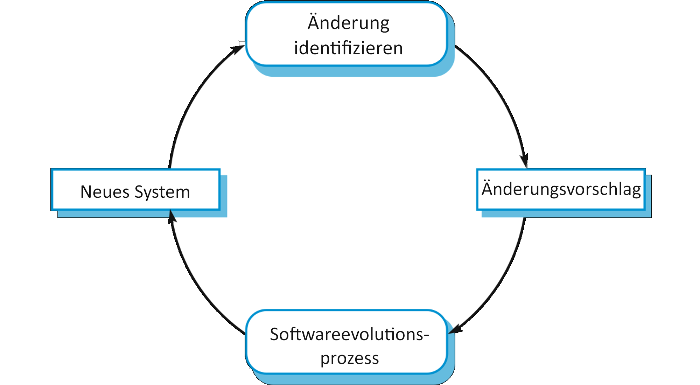
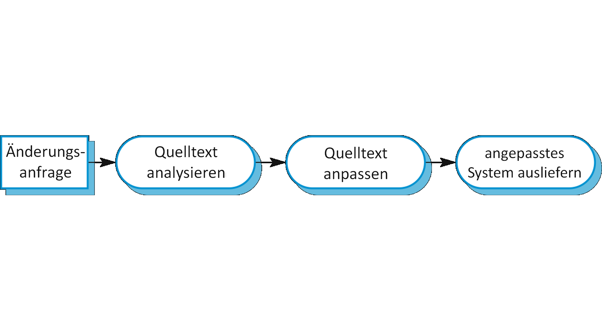
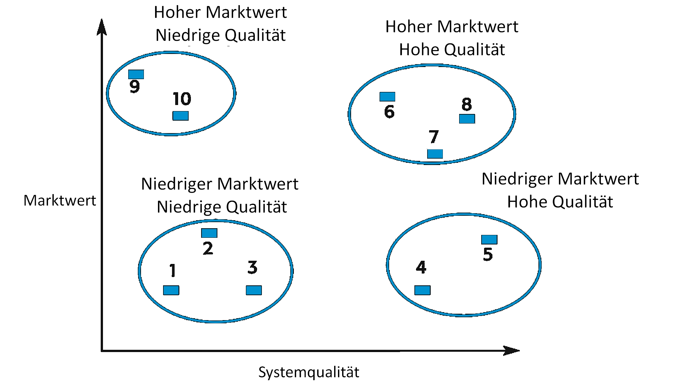

class: center, middle # Kapitel 09: Software Evolution Finn Kuhn --- ## Inhalte * Einführung * Evolutionsprozesse * Änderungsprozess * Ablauf * Altsysteme * Sozialtechnologische Systeme * Altsystemverwaltung * Softwarewartung * Wartungsvorhersagen * Refactoring * Zusammenfassung --- class: center, middle # Einführung Systeme brauchen Veränderung über lange Lebenszeit --- ## Gründe für neue Anforderungen *** * Fehlerbehebung * Änderung an Software oder Hardware Plattform * Performanceverbesserungen * Anpassungen am Betriebssystem * Mithalten mit Konkurrenten --- ## Veröffentlichungszyklus *** <div style="margin-top:20px;"> <img style="width:100%;" src="assets/Bild1.png"/> </div> --- ## Evolution und Service *** <div style="margin-top:140px;"> <img style="width:100%;" src="assets/Bild2.png"/> </div> --- class: center, middle # Evolutionsprozesse Ablauf des Änderungsprozess --- ## Änderungsprozess *** * Keine Standardprozesse * Abhängig von Software, Entwicklungsprozess und Können der Entwickler * Basis bilden Änderungsvorschläge, begründet in: * Existierende Anforderungen * Neue Anforderungen * Berichte über Bugs * Optimierung der Software --- ## Prozess aus Vorschlägen und Evolution *** <div style="margin-top:20px;">  </div> --- ## Aktivitäten während der Evolution *** <div style="margin-top:20px;"> <img style="width:100%;" src="assets/Bild4.png"/> </div> --- ## Notfalländerungen *** <div style="margin-top:20px;">  </div> --- ## Entwicklungs- und Evolutionsteam *** * Probleme bei der Übergabe von Team zu Team * Agil zu planbasiert: nicht viel Dokumentation * Planbasiert zu agil: automatisierte Tests neu entwickeln, Code nicht vereinfacht * Am besten ein Team übernimmt Entwicklung und Evolution * Bei agilen Teams einfacher Übergang * Minimale Änderungen im Ablauf (längerer Veröffentlichungsrhythmus) --- class: center, middle # Altsysteme veraltete Softwaresysteme, die weiter genutzt werden --- ## Sozialtechnologische Systeme *** <div style="margin-top:20px;"> <img style="width:100%;" src="assets/Bild7.png"/> </div> --- ## Schichtenmodell *** <div style="margin-top:20px;"> <img style="width:100%;" src="assets/Bild8.png"/> </div> --- ## Gründe für Weiterbetreiben *** * Ersetzen ist teuer und risikoreich, Gründe: * Unvollständige Dokumentation * Geschäftsprozesse um Altsystem gebaut * Geschäftsregeln undokumentiert in Software eingebaut * Risiko von unerwarteten Probleme --- ## Probleme *** * Änderungen werden immer teurer * Verschiedene Entwickler sorgen für schwer verständlichen Code * Veraltete Programmiersprachen * Dokumentation veraltet * Wartung verschlechtert Struktur * Performanceoptimierung für alte Hardware → schwer verständlicher Code * Daten in verschiedenen Strukturen, redundant oder veraltet * Irgendwann Kosten zu hoch --- ## Strategien zur Altsystemverwaltung *** * Begrenztes Budget erzwingt Auswahl von Evolutionsstrategie * Mögliche Strategien * System komplett entfernen * System unverändert belassen und weiter warten * System überarbeiten und Wartbarkeit verbessern * Ersetzen des Systems --- ## Marktwert und Systemqualität *** <div style="margin-top:20px;">  </div> --- ## Marktwert *** * Marktwert bildet sich aus Zeit und Aufwand gegenüber Alternativen * Merkmale für Marktwert * Nutzung des Systems * Unterstütze Geschäftsprozesse * Systemzuverlässigkeit * Systemausgabe --- ## Technische Perspektive *** * Sowohl Umgebung, als auch Anwendung * Umgebung * Stabilität, Ausfallrate * Alter, Performance * Supportanforderungen, Wartungskosten, Interoperabilität * Anwendung * Verständlichkeit, Dokumentation * Daten, Testdaten * Performance, Programmiersprache, Konfigurationsmanagement * Personalfähigkeiten --- class: center, middle # Softwarewartung Genereller Prozess der Veränderung der Software nach der Auslieferung --- ## Typen der Wartung *** * Fehlerkorrektur von Bugs und Schwachstellen * Programmierfehler: günstig * Designfehler: teurer * Anforderungsfehler: am teuersten * Anpassungen an neue Plattformen und Umgebungen * Funktionen hinzufügen für neue Anforderungen --- ## Anteil der verschiedenen Arten *** <div style="margin-top:20px;"> </div> --- ## Wartungsoptimierung *** * Wartung gleiche Wertschätzung wie Entwicklung * Softwareumgestaltung * Genaue Spezifikation, Test-first, Konfigurationsmanagement * In Praxis mehr Investition in Neuentwicklung * Firmen denken in Quartalszahlen, nicht langfristig * Entwickler kein Anreiz gut wartbare Software zu schreiben --- ## Wartungsvorhersage *** <div style="margin-top:20px;"> <img style="width:100%;" src="assets/Bild11.png"/> </div> --- ## Metriken zur Abschätzung *** * Beziehung zwischen System und externe Umgebung * Anzahl und Komplexität von Schnittstellen * Anzahl von typischerweise sprunghaften Änderungen * Geschäftsablauf um das System * Metriken nach Veröffentlichung * Anzahl der Anfragen für korrektive Wartung * Durchschnittliche Zeit zur Auswirkungsanalyse * Durchschnittliche Bearbeitungszeit einer Änderungsanfrage * Anzahl außerordentlicher Änderungsanfragen --- ## Softwareumgestaltung *** * Um Altsystem einfacher zu warten, kann Software umgestaltet werden * Möglichkeiten: * Neudokumentierung * Refactoring * Übersetzen in moderne Programmiersprachen * Struktur des Systems und der Daten anpassen * Vorteile gegenüber Neuentwicklung * Reduziertes Risiko * Reduzierte Kosten --- ## Ablauf einer Umgestaltung *** <div style="margin-top:20px;"> </div> --- ## Refactoring *** * Verbesserungen machen, um die Degradierung der Software zu verlangsamen * Struktur verbessern, Komplexität reduzieren oder Verständlichkeit verbessern * Konservieren der Funktion * Reduzieren zukünftiger Probleme * Integraler Bestandteil agiler Methoden * Indikatoren für mögliche Verbesserungen * Codeduplikate * Lange methoden * Datenklumpen --- ## Refactoring *** * Einfache Transformationen * Extrahier Methode * Konsolidieren bedingter Ausdrücke * Hochzieh Methode * IDEs unterstützen mit Tools * Design Refactoring, wenn Struktur zu schlecht ist --- ## Zusammenfassung *** * Softwareevolution ist iterativer Prozess * Evolutionsprozess durch Änderungsanfragen getrieben * Altsysteme nutzen veraltete Software und Hardware, trotzdem großer Nutzen * Je nach Altsystem verschiedene Herangehensweisen * Softwareumwandlung strukturiert System für bessere Wartbarkeit um * Refactoring verlangsamt Degradierung, bei gleicher Funktionalität --- ## Quellen *** * Alle Inhalte stammen aus dem Buch Software Engineering von Ian Sommerville (S. 255-282) * Alle Abbildungen basieren auf dem Buch Software Engineering von Ian Sommerville (S. 255-282) und wurden nur ins Deutsche übersetzt, möglichst ohne den Inhalt zu verändern. --- class: center, middle # Kapitel 09: Software Evolution Finn Kuhn